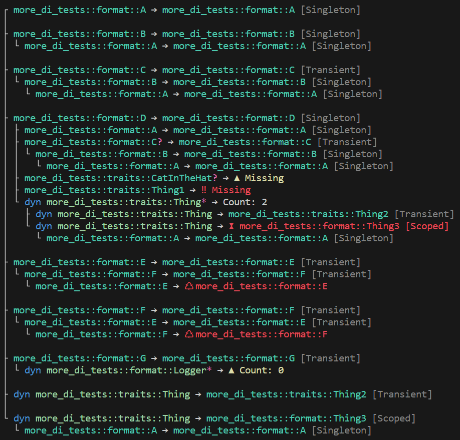

Introduction
more-di is a crate containing all of the fundamental abstractions for dependency injection (DI) in Rust.
Any trait or struct can be used as an injected service.
Design Tenets
- Add, remove, or replace injected services
- Mitigate sequence coupling in service registration
- Support the most common service lifetimes
- Service registry exploration
- Separation of mutable service collection and immutable service provider
- Proc macros are a convenience, not a requirement
- Enable validation of required services, missing services, and circular references
- Support traits and structures defined in external crates
- Support asynchronous contexts
- Enable extensibility across crates
Crate Features
This crate provides the following features:
- default - Abstractions for dependency injection, plus the builder and inject features
- builder - Functions for configuring service descriptors
- async - Use dependencies in an asynchronous context
- inject - Code-generate common injection scenarios
- lazy - Lazy-initialize service resolution
- fmt - Additional output formatting
- alias - Use alternate type aliases
Contributing
more-di is free and open source. You can find the source code on GitHub
and issues and feature requests can be posted on the GitHub issue tracker.
more-di relies on the community to fix bugs and add features: if you’d like to contribute, please read the
CONTRIBUTING guide and consider opening
a pull request.
License
This project is licensed under the MIT license.
Getting Started
The simplest way to get started is to install the crate using the default features.
cargo add more-di
Example
Let’s build the ubiquitous Hello World application. The first thing we need to do is define some traits and structures. We’ll use #[injectable], which is highly convenient, but not strictly required.
use di::*;
use std::rc::Rc;
// let Bar make itself injectable as Bar
#[injectable]
pub struct Bar;
impl Bar {
pub fn speak(&self) -> &str {
"Hello world!"
}
}
pub trait Foo {
pub fn speak(&self) -> &str;
}
// let FooImpl make itself injectable as dyn Foo
#[injectable(Foo)]
pub struct FooImpl {
bar: Rc<Bar> // ← assigned by #[injectable]
}
impl Foo for FooImpl {
fn speak(&self) -> &str {
self.bar.speak()
}
}
pub trait Thing {}
// let Thing1 make itself injectable as dyn Thing
#[injectable(Thing)]
pub struct Thing1;
impl Thing for Thing1 {}
// let Thing2 make itself injectable as dyn Thing
#[injectable(Thing)]
pub struct Thing2;
impl Thing for Thing2 {}Now that we have a few injectable types, we can build a basic application.
use crate::*;
use di::*;
fn main() {
// create a collection of registered services. the order of
// registration does not matter.
let services = ServiceCollection::new()
.add(FooImpl::transient())
.add(Bar::singleton())
.add(Thing1::transient());
.add(Thing2::transient());
// build an immutable service provider from the collection
// of services. validation is performed here to ensure
// the provider is a good state. if we're not, then a
// ValidationError will indicate what the problems are.
// if, for example, we forgot to register Bar, an error
// would be returned indicating that Bar is missing.
let provider = services.build_provider().unwrap();
// get the requested service or panic
let foo = provider::get_required::<dyn Foo>();
println!("Foo says '{}'.", foo.speak());
// get all of the requested services, which could be zero
let things: Vec<_> = provider::get_all::<Thing>().collect();
println!("Number of things: {}", things.len());
}Service Lifetimes
A service can have the following lifetimes:
- Transient - a new instance is created every time it is requested
- Singleton - a single, new instance is created the first time it is requested
- Scoped - a new instance is created once per provider that it is requested from
A service with a Singleton lifetime, which depends on service that has a Transient lifetime will effectively promote that service to a Singleton lifetime as well. A service with a Singleton lifetime, which depends on service that has a Scoped lifetime will result in a validation error.
Lifetime Management
The lifetime of a service determines how long a service lives relative to its owning ServiceProvider. When a ServiceProvider is dropped, all of the service instances it owns are also dropped. If a service instance somehow outlives its owning ServiceProvider, when the last of the owners is dropped, the service will also be dropped. The ServiceProvider itself will never leak any instantiated services.
There are scenarios where you might want a ServiceProvider to be scoped for a limited amount of time. A HTTP request, for example, has a Per-Request lifetime where you might want some services to be shared within the scope of the request (e.g. scoped) and then dropped. A new scope can be created via create_scope from any ServiceProvider.
Consider the following structures:
use di::*;
#[injectable]
pub struct Bar;
#[injectable]
pub struct Foo {
bar: Ref<Bar>
}Service Provider Singletons
A Singleton is created exactly once and lives for the lifetime of the root ServiceProvider no matter where it is actually first instantiated.
A Singleton in the root scope will be the same as a Singleton created in a nested scope.
use crate::*;
use di::*;
let provider = ServiceCollection::new()
.add(Bar::transient())
.add(Foo::singleton())
.build_provider()
.unwrap();
let foo1 = provider.get_required::<Foo>();
{
let scope = provider.create_scope();
let foo2 = scope.get_required::<Foo>();
assert!(Ref::ptr_eq(&foo1, &foo2));
}In addition, if a Singleton is first created in a nested scoped, it will still be the same instance in the root scope.
use crate::*;
use di::*;
let provider = ServiceCollection::new()
.add(Bar::transient())
.add(Foo::singleton())
.build_provider()
.unwrap();
let foo1;
{
let scope = provider.create_scope();
foo1 = scope.get_required::<Foo>();
}
let foo2 = provider.get_required::<Foo>();
assert!(Ref::ptr_eq(&foo1, &foo2));Service Provider Scopes
A Scoped service only lives as long as the lifetime of the owning service provider.
use crate::*;
use di::*;
let provider = ServiceCollection::new()
.add(Bar::transient())
.add(Foo::scoped())
.build_provider()
.unwrap();
let foo1 = provider.get_required::<Foo>();
let foo2;
{
let scope = provider.create_scope();
foo2 = scope.get_required::<Foo>();
let foo3 = scope.get_required::<Foo>();
// foo2 == foo3 because they have the same scope
assert!(Ref::ptr_eq(&foo2, &foo3));
} // ← all instances owned by 'scope' are dropped here
// 'foo2' outlived the scope because we held onto it for
// testing/demonstration purposes. as soon as it goes
// out of scope, it will be dropped. transient services
// behave in the same way and no instances are held by
// the ServiceProvider they were resolved from
//
// foo1 != foo2 because they came from different scopes
assert!(!Ref::ptr_eq(&foo1, &foo2));Supported Types
While you are able to use any trait or struct you want for service registration, there are a few limitations as to how they can be resolved in order to satisfy the necessary service lifetime requirements.
There are a few basic forms in which you can request a service:
Rc- a required serviceRc<RefCell>- a required, mutable serviceOption<Rc>- an optional service (e.g. unregistered)Option<Rc<RefCell>>- an optional, mutable service (e.g. unregistered)Iterator<Item = Rc>- a sequence of servicesIterator<Item = Rc<RefCell>>- a sequence of mutable servicesLazy- a lazy-initialized serviceKeyedRef<K,T>- a required, keyed serviceOption<KeyedRef<K,T>>- an optional, keyed serviceIterator<Item = KeyedRef<K,T>>- a sequence of keyed servicesServiceProvider- the service provider itselfScopedServiceProvider- a new, scoped service provider from the resolving instance
When the async feature is enabled, you must use Arc instead of Rc. To facilitate switching between synchronous and asynchronous contexts as well as making the syntax slightly more succinct, the following type aliases are provided:
Ref=RcorArcRefMut=Rc<RefCell>orArc<RwLock>KeyedRefMut<K,T>=KeyedRef<K,RefCell>orKeyedRef<K,RwLock>
Macro Support
#[injectable] understands all of the forms listed above and supports mixed forms as well; for example, Ref<RefCell> is equivalent to RefMut. Since the results of an iterator must be owned, #[injectable] also supports using Vec at any injected call site that would otherwise use Iterator. The combinations Option<Vec> and Vec<Option>, however, are invalid.
Injecting Iterator is only supported when using an injection constructor. This is useful when you may not want to own the injected sequence of services or you want to use a collection other than Vec, such as HashMap.
For more information see macros.
Custom Type Aliases
These features are only available if the alias feature is activated
User-defined type aliases are usually not a problem for a library. When you use the #[injectable] attribute macro, however, it becomes important because the macro needs to understand the call site that it inspects so that it can generate the appropriate code. To overcome this limitation, you can define a custom mapping in the crate dependency configuration using the aliases table with the following keys:
| Key | Default Alias |
|---|---|
ref | Ref |
ref-mut | RefMut |
keyed-ref | KeyedRef |
keyed-ref-mut | KeyedRefMut |
For example, if you prefer the prefix Svc, you can remap them all as follows:
[dependencies.more-di.aliases]
ref = "Svc"
ref-mut = "SvcMut"
keyed-ref = "KeyedSvc"
keyed-ref-mut = "KeyedSvcMut"
You are still required define the aliases in your library or application:
type Svc<T> = Ref<T>;
type SvcMut<T> = RefMut<T>;
type KeyedSvc<K,T> = KeyedRef<K,T>;
type KeyedSvcMut<K,T> = KeyedRefMut<K,T>;The only constraints are that the aliases you define must have the same number of generic type arguments. You are not required to use the built-in aliases. If you prefer to directly alias the underlying type, that is also allowed:
type Svc<T> = std::rc::Rc<T>;You are not required to alias every type. If all of your services are read-only and don’t use keys, then the configuration can be simplified:
[dependencies]
more-di = { version = "2.0", features = ["alias"], aliases { ref = "Sr" } }
The type aliasing feature comes from the more-di-macros crate; however, the more-di crate is the dependency that most consumers will reference directly.
You can apply the aliases table to either the more-di or more-di-macros dependency configuration. If you specify both, more-di takes precedence.
Backward Compatibility
In previous library versions, the primary type alias was ServiceRef. This added a lot of unnecessary verbosity that becomes prolific in your code. Ref is considerably
more succinct and even the qualified form di::Ref is shorter, yet unambiguous. To facilitate a smooth upgrade to newer versions, the ServiceRef type alias is
still automatically recognized without enabling the alias feature nor explicitly configuring the mapping with key = "ServiceRef". The only requirement is that you
must define the alias in your library or application.
type ServiceRef<T> = Ref<T>;Service Registration
Service Descriptors
The foundation of the entire crate revolves around a ServiceDescriptor. A descriptor describes the following about a service:
- The service type
- The implementation type
- Its lifetime
- Its dependencies, if any
- The factory function used to instantiate the service
Rust does not have a Reflection API so the Type struct is used to represent a pseudo-type. A ServiceDescriptor also enables a collection of services to be explored, validated, and/or modified.
To ensure that a ServiceDescriptor is properly constructed, you can only create an instance through one of the provided factories:
Service Collection
A ServiceCollection is a mutable container of ServiceDescriptor instances that you can modify before creating an immutable ServiceProvider. The ServiceCollection allows you to register or modify services in any order. When you’re ready to create a ServiceProvider, the ServiceCollection will validate all service dependencies before constructing the instance. The ServiceCollection cannot guarantee you won’t ask for a service that doesn’t exist, but it can guarantee any service it knows about can be correctly resolved. The ServiceCollection is ultimately a factory and can create multiple, independent ServiceProvider instances if you want.
For binary applications, most users will only add descriptors to the ServiceCollection. The ServiceCollection becomes much more useful in library crates and test applications. Here is a summary of the most useful functions:
| Function | Description |
|---|---|
add | Adds a new item |
try_add | Attempts to add a new item if the same service is unregistered |
try_add_to_all | Attempts to add a new item to a set if it’s unregistered |
try_add_all | Adds a sequence of new items |
replace | Adds a new item or replaces an existing registration |
try_replace | Equivalent to try_add |
Best Practice
To make it easy to test a binary application, it is recommended that you expose a public function that configures the default set of services. This will make it simple to use the same default configuration as the application and replace only the parts that are necessary for testing.
use di::*;
#[injectable]
pub struct Runner;
impl Runner {
pub fn run(&self) {
// TODO: implementation
}
}
pub fn config_default_services(services: &mut ServiceCollection) {
services.add(Runner::singleton());
// TODO: register other services
// replaceable services should use try_add so that any
// existing registration, say from a test, is not overridden
}
fn main() {
let mut services = ServiceCollection::new();
config_default_services(&mut services);
let provider = services.build_provider().unwrap();
let runner = provider.get_required::<Runner>();
runner.run();
}You can now create a test replicating the same setup as the release application, but only changing the parts you need to for testing.
use crate::*;
use di::*;
#[test]
fn runner_should_do_expected_work() {
// arrange
let mut services = ServiceCollection::new();
// TODO: add test replacements with: services.add(?);
config_default_services(&mut services);
// TODO: optionally, override defaults with: services.replace(?);
let provider = services.build_provider().unwrap();
let runner = provider.get_required::<Runner>();
// act
runner.run();
// assert
// TODO: assertions
}Mutable Services
The borrowing rules imposed by Rust places limitations on creating mutable services. The service lifetimes supported by dependency injection make using the mut keyword in an idiomatic way impossible. There are, at least, three possible alternate solutions:
- Use Interior Mutability within your service implementation
- Design your service as a factory which is shared within DI, but can create instances owned outside the factory that are idiomatically mutable
- Decorate your service with
RefCellor, if the async feature is activated,RwLock
Option 3 is the only method provided out-of-the-box as the other options are subjective design choices within the scope of your application. One of the consequences of this approach is that the types RefCell and RwLock themselves become part of the service registration; Ref and Ref<RefCell> (or RefMut for short) are considered different services. In most use cases, this is not a problem. Your service is either entirely read-only or it is read-write. If you need both and two different service instances will not work for you or you want finer-grained control over synchronization, you should consider Interior Mutability instead.
Builder
These features are only available if the builder feature is activated
The ServiceDescriptorBuilder is the long-form approach used to create ServiceDescriptor instances. It is most useful when you need to create ServiceDescriptor instances and you don’t want to use the provided macros. You might also need this capability for a scenario not supported by the macros or because you need to inject types defined in an external crate that do not provide extensibility points from the more-di crate.
The ServiceDescriptorBuilder is accompanied by numerous shorthand functions to simplify registration:
| Function | Starts Building |
|---|---|
singleton | A singleton service |
singleton_as_self | A singleton service for a struct |
singleton_factory | A singleton service from a factory function |
singleton_with_key | A singleton service with a key |
singleton_with_key_factory | A singleton service using a key and factory function |
scoped | A scoped service |
scoped_factory | A scoped service from a factory function |
scoped_with_key | A scoped service with a key |
scoped_with_key_factory | A scoped service using a key and factory function |
transient | A transient service |
transient_factory | A transient service using a factory function |
transient_as_self | A transient service for struct |
transient_with_key | A transient service with a key |
transient_with_key_factory | A transient service using a key and factory function |
transient_with_key_as_self | A transient service with key for a struct |
existing | A singleton service from an existing instance |
existing_as_self | A singleton service from an existing struct |
existing_with_key | A singleton service from an existing instance with a key |
existing_with_key_as_self | A singleton service from an existing struct for a struct |
The following registers arbitrary traits and structs as services:
use di::*;
use std::rc::Rc;
pub struct Bar;
impl Bar {
pub fn speak(&self) -> &str {
"Hello world!"
}
}
pub trait Foo {
fn speak(&self) -> &str;
}
pub struct FooImpl {
bar: Rc<Bar>
}
impl Foo for FooImpl {
fn speak(&self) -> &str {
self.bar.speak()
}
}
fn run() {
let provider = ServiceCollection::new()
.add(transient_as_self::<Bar>().from(|_| Rc::new(Bar)))
.add(singleton::<dyn Foo, FooImpl>()
.from(|sp| Rc::new(FooImpl { bar: sp.get_required::<Bar>() })))
.build_provider()
.unwrap();
let foo = provider.get_required::<dyn Foo>();
println!("{}", foo.speak());
}Multiple Traits
In a few advanced scenarios, you might need a single service implementation to be mapped to multiple traits. This can be achieved, but ancillary service registrations must be explicit. There is currently no macro support for such a configuration.
Consider the following:
use di::*;
trait Service1 { }
trait Service2 { }
#[injectable]
struct MultiService;
impl Service1 for MultiService { }
impl Service2 for MultiService { }It is now possible to register a single service with multiple traits as follows:
use crate::*;
use di::*;
let provider = ServiceCollection::new()
// MultiService → Self
.add(MultiService::singleton())
// MultiService → dyn Service1
.add(transient_factory::<dyn Service1>(|sp| sp.get_required::<MultiService>()))
// MultiService → dyn Service2
.add(transient_factory::<dyn Service2>(|sp| sp.get_required::<MultiService>()))
.build_provider()
.unwrap();
let svc1 = provider.get_required::<dyn Service1>();
let svc2 = provider.get_required::<dyn Service2>();Care must be taken to ensure the lifetime of the primary service is compatible with the ancillary services. Each ancillary service should never live longer than the primary service. This configuration is most common when primary service is a Singleton or Scoped. If the primary service is Transient, the two independent registrations can be used instead.
Keyed Services
Occasionally there are edge cases where the same service might need to be registered more than once for different contexts. A few scenarios include the same service, but with different lifetimes or different implementations of the same service in an otherwise ambiguous context.
Consider the following:
use di::*;
pub trait Thing : ToString;
#[injectable(Thing)]
pub struct Thing1;
impl Thing for Thing1;
impl ToString for Thing1 {
fn to_string(&self) -> String {
String::from(std::any::type_name::<Self>())
}
}
#[injectable(Thing)]
pub struct Thing2;
impl Thing for Thing2;
impl ToString for Thing2 {
fn to_string(&self) -> String {
String::from(std::any::type_name::<Self>())
}
}
#[injectable]
pub struct CatInTheHat {
pub thing1: Ref<dyn Thing>,
pub thing2: Ref<dyn Thing>,
}CatInTheHat has two different dependencies of dyn Thing, but they are not expected to be same implementation. One solution would be to simply use Thing1 and Thing2 directly. Another solution would be to have complementary dyn Thing1 and dyn Thing2 traits. The final approach would be to used keyed services.
A keyed service allows a service to be resolved in conjunction with a key. In many dependency injection frameworks, keyed services are supported by using a String as the key. That approach has a number of different problems. The more-di crate uses a type as a key instead. This approach provides the following advantages:
- No magic strings
- No attributes or other required metadata
- No hidden service location lookups
- No name collisions (because types are unique)
- No changes to
ServiceDescriptor
In the previous code example there is nothing in place that restricts or defines which dyn Thing needs to be mapped. By definition, any dyn Thing could be used, but a specific mapping is expected. To address that, we can refactor to use a KeyedRef.
We also need to define some keys. A key is just a type used as a marker. A zero-sized struct is perfect for this case. For all intents and purposes, this struct acts like an enumeration. A key difference is that the required value is defined as part of the requested type, which an enumeration cannot do.
Let’s perform a little refactoring:
use crate::*;
use di::*;
pub mod key {
pub struct Thing1;
pub struct Thing2;
}
#[injectable]
pub struct CatInTheHat {
pub thing1: KeyedRef<key::Thing1, dyn Thing>,
pub thing2: KeyedRef<key::Thing2, dyn Thing>,
}Introducing a key means that we can no longer provide just any dyn Thing; a specific registration must be mapped. Although it is still possible to configure the wrong key, the key specified will never collide with a key defined by another crate. The compiler will enforce the key specified exists and the configuration will be validated when the ServiceProvider is created. Key types do not be need to be public or in nested modules unless you want them to be.
It’s important to know that we only need the key at the injection call site. We can safely convert down to Ref if we use an injected constructor as follows:
use crate::*;
use di::*;
pub struct CatInTheHat {
pub thing1: Ref<dyn Thing>,
pub thing2: Ref<dyn Thing>,
}
#[injectable]
impl CatInTheHat {
pub fn new(
thing1: KeyedRef<key::Thing1, dyn Thing>,
thing2: KeyedRef<key::Thing2, dyn Thing>) -> Self {
// the key isn't useful after the correct service is injected
Self {
thing1: thing1.into(),
thing2: thing2.into(),
}
}
}Putting it all together, the service registration now looks like:
use crate::*;
use di::*;
let services = ServiceCollection::new()
.add(Thing1::transient().with_key::<key::Thing1>())
.add(Thing2::transient().with_key::<key::Thing2>())
.add(CatInTheHat::singleton())
.build_provider()
.unwrap();
let cat = provider.get_required::<CatInTheHat>();
println!("Hi from {}", cat.thing1.to_string());
println!("Hi from {}", cat.thing2.to_string());If you’re not using
#[injectable], the long-form builder functions provide variants that support specifying a key while creating aServiceDescriptor.
Creating a keyed service explicitly is still possible and useful for some scenarios such as testing:
#[test]
fn setup_cat_in_the_hat() {
// arrange
let thing1 = KeyedRef::<key::Thing1, dyn Thing>::new(Ref::new(Thing1::default()));
let thing2 = KeyedRef::<key::Thing2, dyn Thing>::new(Ref::new(Thing2::default()));
let cat = CatInTheHat::new(thing1, thing2);
// act
let name = cat.thing1.to_string();
// assert
assert_eq!(&name, "crate::Thing1");
}Service Decoration
Service decoration is a unique edge case where you need to change the behavior of an existing service without completing replacing it or reregistering it. Reregistration may not even be possible if you do not know how the service was originally registered, which is typical for extensions.
The following table summarizes ServiceCollection functions provided for service decoration:
| Function | Description |
|---|---|
decorate | Attempts to decorate a specific service type |
decorate_all | Attempts to decorate all registrations of a specific service type |
Consider there is some generic component defined as a Feature and you would like to track usage of features. If the Feature is external, then decoration is the only option. If the Feature is in the same application, you still might choose this approach to keep a clear separation of concerns. The following example illustrates creating a FeatureTracker that decorates a registered Feature and tracks how many times it is shown.
use di::*;
use std::sync::atomic::{AtomicUsize, Ordering};
trait Feature {
fn show(&self);
}
#[injectable(Feature)]
struct FeatureImpl;
impl Feature for FeatureImpl {
fn show(&self) {
}
}
struct FeatureTracker {
decorated: Ref<dyn Feature>,
count: AtomicUsize,
}
impl Feature for FeatureTracker {
fn show(&self) {
self.count.fetch_add(0, Ordering::Relaxed);
self.decorated.show()
}
}
let services = ServiceCollection::new()
.add(FeatureImpl::transient())
.decorate::<dyn Feature, FeatureTracker>(|sp, decorated| {
Ref::new(FeatureTracker { decorated, count: Default::default() })
})
.build_provider()
.unwrap();
let feature = provider.get_required::<dyn Feature>();
feature.show();Service Validation
The consumers of a ServiceProvider expect that it is correctly configured and ready for use. There are edge cases,
however, which could lead to runtime failures or incorrect behavior such as:
- A required, dependent service that has not been registered
- A circular dependency, which will result in a stack overflow
- A service with a singleton lifetime that has a dependent service with a scoped lifetime
Intrinsic validation is provided to ensure those scenarios cannot happen. The ServiceCollection::build_provider() function will return Result<ServiceProvider, ValidationError>, which will either contain a valid ServiceProvider or a ValidationError that will detail all of the errors. From that point forward, the ServiceProvider will be considered semantically correct and safe to use. The same validation process can also be invoked imperatively on-demand by using the validate function on a given ServiceCollection.
Service Dependency
A ServiceDependency is a simple mapping that indicates the dependent Type and its ServiceCardinality. The set of dependencies for a service are defined by the arity of the arguments required to construct it, which is based on either its constructor arguments or all of its fields.
Rust does not have a Reflection API so the ServiceDescriptorBuilder cannot automatically determine the dependencies your service requires; therefore, validation is an explicit, opt-in capability. If you do not configure any dependencies for a ServiceDescriptor, then no validation will occur.
While you can create a ServiceDependency in its long-form, there are several shorthand functions available to make it more succinct:
| Function | Dependency Type |
|---|---|
exactly_one | Exactly one service of a specified type |
exactly_one_with_key | Exactly one service of a specified type and key |
zero_or_one | Zero or one services of a specified type |
zero_or_one_with_key | Zero or one services of a specified type and key |
zero_or_more | Zero or more services of a specified type |
zero_or_more_with_key | Zero or more services of a specified type and key |
Note: These functions are only available if the builder feature is activated
Consider the following:
use di::*;
pub struct Bar;
pub struct Foo {
pub bar: Ref<Bar>
}Let’s assume that we forgot to register Bar:
use di::*;
let services = Services::new()
.add(transient_as_self::<Foo>().from(|_| Ref::new(Foo)))
.build_provider()
.unwrap(); // ← this will not panic
// the following panics because Bar is required and it has not be registered
let foo = provider.get_required::<Foo>();While the mistake will be discovered at some point, it could be a long-time coming in a larger, more complex application. To alleviate that situation, we want to fail as early as possible.
Let’s refactor the service registration with some dependencies:
use di::*;
let services = Services::new()
.add(transient_as_self::<Foo>()
.depends_on(exactly_one::<Bar>()) // ← indicate a Bar is required
.from(|_| Ref::new(Foo)))
.build_provider()
.unwrap(); // ← now panics because Bar is an unregistered dependencySpecifying dependencies using their long-form, while a valid configuration, is verbose and tedious. The #[injectable] attribute will automatically build dependencies for each injected call site and is the preferred approach.
Service Resolution
Once you’ve registered, validated, and instantiated a ServiceProvider, you’ll eventually need to get something out of it. This should typically only happen at the root of your application, but it might occur in other scenarios such as creating a new scope. The following functions are provided to resolve services:
| Function | Resolution |
|---|---|
get | A single service, if it’s registered |
get_mut | A single, mutable service, if it’s registered |
get_by_key | A single service by key, if it’s registered |
get_by_key_mut | A single, mutable service by key, if it’s registered |
get_all | All services of the specified type |
get_all_mut | All mutable services of the specified type |
get_all_by_key | All services of the specified type and key |
get_all_by_key_mut | All mutable services of the specified type and key |
get_required | A single service or panics |
get_required_mut | A single, mutable service or panics |
get_required_by_key | A single service by key or panics |
get_required_by_key_mut | A single, mutable service by key or panics |
Examples
Consider the following structures:
use di::*;
trait Thing { }
struct Thing1;
impl Thing for Thing1 { }
struct Thing2;
impl Thing for Thing2 { }
struct Thing3;
impl Thing for Thing3 { }Here are some ways that we can register and resolve them:
use crate::*;
use di::*;
let provider = ServiceCollection::new()
.add(transient_as_self::<Thing1>().from(|_| Ref::new(Thing1)))
.add(transient::<dyn Thing, Thing1>().from(|_| Ref::new(Thing1)))
.add(transient::<dyn Thing, Thing2>().from(|_| Ref::new(Thing2)))
.add(transient_mut::<dyn Thing, Thing3>().from(|_| RefMut::new(Thing3.into())))
.build_provider()
.unwrap();
// Some(Thing1)
assert!(provider.get::<Thing1>().is_some());
// None
assert!(provider.get::<Thing3>().is_none());
// RwLock<dyn Thing> → RwLock<Thing3>
assert!(provider.get_mut::<dyn Thing>().is_some());
// dyn Thing → Thing1
// dyn Thing → Thing2
assert_eq!(provider.get_all::<dyn Thing>().count(), 2);Lazy Initialization
These features are only available if the lazy feature is activated
There are some scenarios where you know or have high reason to believe that a particular service composition will
be expensive to create. The requirement to eagerly load every injected service instance in such situations is
undesirable. There are several methods by which you can differ dependency resolution, including declaring a
parameter which would inject the ServiceProvider itself. Using the Service Locator pattern in this manner
hides dependencies and is considered to be an anti-pattern. The lazy feature provides an out-of-the-box
facility to address this problem.
The Lazy struct is a holder that resolves a service in a lazily evaluated manner. The Lazy struct itself is owned by the struct it is injected into and the lifetime of the service resolved is unchanged. The key difference is that the injected service dependency is well-known at the call site, but its evaluation is differed.
Consider the following:
use di::*;
#[derive(Default)]
pub struct Expensive {
// expensive stuff here
}
impl Expensive {
pub fn do_work(&self) {
// use expensive stuff
}
}
pub struct Needy {
expensive: Lazy<Ref<Expensive>>
}
impl Needy {
pub fn new(expensive: Lazy<Ref<Expensive>>) -> Self {
Self { expensive }
}
pub fn run(&self) {
self.expensive.value().do_work()
}
}The Needy struct defines a Lazy that wraps around a service dependency. This allows the service to
be evaluated on-demand and also keeps the Expensive struct visible as a required collaborator.
Despite being a generic type, Lazy can only be created using the utility functions from the lazy
module as follows:
| Function | Resolution |
|---|---|
lazy::exactly_one | A required service lazily |
lazy::exactly_one_mut | A required, mutable service lazily |
lazy::exactly_one_with_key | A required service with a key lazily |
lazy::exactly_one_with_key_mut | A required, mutable service with key lazily |
lazy::zero_or_one | An optional service lazily |
lazy::zero_or_one_mut | An optional, mutable service lazily |
lazy::zero_or_one_by_key | An optional, service with a key lazily |
lazy::zero_or_one_by_key_mut | An optional, mutable service with a key lazily |
lazy::zero_or_more | One or more services lazily |
lazy::zero_or_more_mut | One or more mutable services lazily |
lazy::zero_or_more_by_key | One or more services with a key lazily |
lazy::zero_or_more_by_key_mut | One or more mutable services with a key lazily |
lazy::missing | Always resolves None |
lazy::missing_with_key | Always resolves None |
lazy::empty | Always resolves Vec::new() |
lazy::empty_with_key | Always resolves Vec::new() |
lazy::init | Initializes from an instance (ex: testing) |
lazy::init_mut | Initializes from a mutable instance (ex: testing) |
lazy::init_by_key | Initializes from a keyed instance (ex: testing) |
lazy::init_by_key_mut | Initializes from a mutable, keyed instance (ex: testing) |
Lazy is a special type which cannot be resolved directly from a ServiceProvider. You will
need construct one or more Lazy registrations in the activation factory method. For example:
use crate::*;
use di::*;
fn main() {
let provider = ServiceCollection::new()
.add(singleton_as_self::<Expensive>()
.from(|_| Rc::new(Expensive::default())));
.add(singleton_as_self::<Needy>()
.depends_on(exactly_one::<Expensive>())
.from(|sp| Rc::new(Needy::new(lazy::exactly_one(sp.clone())))))
.build_provider()
.unwrap();
let needy = provider.get_required::<Needy>();
needy.run()
}Note:
singleton_as_selfandexactly_oneare functions provided by the builder feature, whilelazy::exactly_oneis provided by the lazy feature.
When #[injectable] is used, it will generate the appropriate lazy function for the injected call site.
Macros
These features are only available if the inject feature is activated
Injectable
The Injectable trait provides the ability for a struct to be injected as a single trait that it implements or as itself.
pub trait Injectable: Sized {
fn inject(lifetime: ServiceLifetime) -> InjectBuilder;
fn singleton() -> InjectBuilder {
Self::inject(ServiceLifetime::Singleton)
}
fn scoped() -> InjectBuilder {
Self::inject(ServiceLifetime::Scoped)
}
fn transient() -> InjectBuilder {
Self::inject(ServiceLifetime::Transient)
}
}Default implementations are provided each of the specific lifetimes, thereby requiring only a single function to be implemented.
use di::*;
pub struct Bar;
pub struct Foo {
bar: Ref<Bar>
}
impl Injectable for Bar {
fn inject(lifetime: ServiceLifetime) -> InjectBuilder {
InjectBuilder::new(
Activator::new::<Self, Self>(
|_| Ref::new(Self),
|_| RefMut::new(Self.into()),
),
lifetime,
)
}
}
impl Injectable for Foo {
fn inject(lifetime: ServiceLifetime) -> InjectBuilder {
InjectBuilder::new(
Activator::new::<Self, Self>(
|sp| Ref::new(Self { bar: sp.get_required::<Bar>() }),
|sp| RefMut::new(Self { bar: sp.get_required::<Bar>() }.into()),
),
lifetime,
)
.depends_on(
ServiceDependency::new(
Type::of::<Bar>(),
ServiceCardinality::ExactlyOne))
}
}#[injectable]
While implementing Injectable might be necessary or desired in a handful of scenarios, it is mostly tedious ceremony. If the injection call site were known, then it would be possible to provide the implementation automatically. This is exactly what the #[injectable] proc macro attribute provides.
Instead of implementing Injectable explicitly, the entire implementation can be achieved with a simple decorator:
use di::*;
#[injectable]
pub struct Bar;
#[injectable]
pub struct Foo {
bar: Ref<Bar>
}The #[injectable] attribute also supports a single, optional parameter value: the name of the injected trait. When no value is specified, it is assumed that the struct will be injected as itself. When a value is specified, a constructed ServiceDescriptor will map the struct to the specified trait.
use di::*;
pub trait Foo;
#[injectable(Foo)] // dyn Foo → FooImpl
pub struct FooImpl;Multiple Traits
In most scenarios where you want to inject a trait, you will specify a single trait. There are a limited number of edge cases where you might need to specify multiple traits. The most common use case will be implementing a trait for a struct that is thread-safe, but the trait definition does not declare that itself.
use di::*;
pub trait Foo;
#[injectable(Foo + Send + Sync)] // dyn Foo + Send + Sync → FooImpl
pub struct FooImpl;Note that the combination of all traits now defines the service. The complete set of traits must be specified in order to resolve the service.
let provider = ServiceCollection::new()
.add(FooImpl::transient())
.build_provider()
.unwrap();
let foo = provider.get_required::<dyn Foo + Send + Sync>();Injection Rules
The most basic form of injection allows #[injectable] to be applied to any struct or tuple struct, including generics.
A generic type parameter requires a
'staticlifetime on it bounds due to theAnyrequirement; however, the actual type used will typically be coerced to a shorter lifetime.
use di::*;
#[injectable]
pub struct Simple;
#[injectable]
pub struct Tuple(pub Ref<Simple>);
#[injectable]
pub struct Generic<T: 'static> {
value: Ref<T>,
}If the target struct defines fields that are not meant to be injected, then it is assumed that those types implement Default. If they don’t, then an error will occur.
use di::*;
#[injectable]
pub struct Complex {
simple: Ref<Simple>, // ← ServiceProvider.get_required::<Simple>()
counter: usize, // ← Default::default()
}This behavior might be undesirable, unsupported, or you may just want more control over initialization. To support that capability, #[injectable] can also be applied on a struct impl block. This is because that is the location where the function that will be used to construct the struct is expected to be found. This allows the attribute to inspect the injection call site of the function to build the proper implementation.
By default, #[injectable] will search for an associated function named new. The function does not need to be pub. This is a simple convention that works for most cases; however, if you want to use a different name, the intended function must be decorated with #[inject]. #[inject] simply indicates which function to use. If new and a decorated function are defined, the decorated function will take precedence. If multiple functions have #[inject] applied, an error will occur.
The following basic example uses a constructor:
use di::*;
pub struct Complex2 {
simple: Ref<Simple>
counter: usize
}
#[injectable]
impl Complex2 {
// assumed to be the injection constructor by naming convention
pub fn new(simple: Ref<Simple>) -> Self {
Self {
simple,
counter: 0,
}
}
}The following advanced example uses a custom constructor:
use di::*;
pub trait Input { }
pub trait Translator {
fn translate(&self, text: &str, lang: &str) -> String;
}
pub trait Logger {
fn log(&self, message: &str);
}
pub trait Runner {
fn run(&self);
}
pub struct DefaultRunner {
input: Ref<dyn Input>,
translator: Option<Ref<dyn Input>>,
loggers: Vec<Ref<dyn Logger>>,
}
#[injectable(Runner)]
impl DefaultRunner {
#[inject] // ↓ use 'create' instead of inferring 'new'
pub fn create(
input: Ref<dyn Input>,
translator: Option<Ref<dyn Input>>,
loggers: Vec<Ref<dyn Logger>>) -> Self {
Self {
input,
translator,
loggers,
}
}
}
impl Runner for DefaultRunner {
fn run(&self) {
// TODO: implementation
}
}The Injectable implementation for DefaultRunner expands to:
impl Injectable for DefaultRunner {
fn inject(lifetime: ServiceLifetime) -> InjectBuilder {
InjectBuilder::new(
Activator::new::<dyn Runner, Self>(
|sp| Ref::new(
Self::create(
sp.get_required::<dyn Input>(),
sp.get::<dyn Input>(),
sp.get_all::<dyn Logger>().collect())),
|sp| RefMut::new(
Self::create(
sp.get_required::<dyn Input>(),
sp.get::<dyn Input>(),
sp.get_all::<dyn Logger>().collect()).into()),
)
)
.depends_on(
ServiceDependency::new(
Type::of::<dyn Input>(),
ServiceCardinality::ExactlyOne))
.depends_on(
ServiceDependency::new(
Type::of::<dyn Translator>(),
ServiceCardinality::ZeroOrOne))
.depends_on(
ServiceDependency::new(
Type::of::<dyn Logger>(),
ServiceCardinality::ZeroOrMore))
}
}Builder
InjectBuilder is similar to, but not exactly the same as, ServiceDescriptorBuilder. InjectBuilder is part of the inject feature, while ServiceDescriptorBuilder is part of the builder feature. The key implementation differences are a non-generic type, mutable construction (as_mut), and deferred key configuration (with_key<TKey>). This enables multiple registration scenarios with a single implementation.
let provider = ServiceCollection::new()
.add(Simple::transient()) // ← Ref<Simple>
.add(Simple::transient().as_mut()) // ← RefMut<Simple>
.add(Simple::transient()
.with_key::<key::Alt>()) // ← KeyedRef<key::Alt, Simple>
.add(Simple::transient()
.with_key::<key::Alt>()
.as_mut()) // ← KeyedRefMut<key::Alt, Simple>
.build_provider()
.unwrap();Extensibility
Using dependency injection in your own application is certainly useful; however, the strength of the more-di crate really starts to shine when you enable DI composition across different crates. It effectively enables a DI ecosystem that crate library authors can elect to make required or opt into as a conditional feature.
Configuration
There are few requirements to make it possible to interleave DI into a library. This will typically be configured in Cargo.toml.
[package]
name = "logger"
version = "1.0.0"
description = "An example logger"
[lib]
name = "logger"
[features]
di = ["more-di"]
async = ["more-di/async"] # our 'async' feature actives the 'more-di/async' feature
[dependencies.more-di]
version = "3.0"
default-features = false
features = ["inject"]
optional = true # only bring di when requested
The next part is to create a trait that can apply the extensions. It is not a hard requirement, but this typically takes the form of:
pub trait <Feature>ServiceExtensions- Defined in the
crate::extmodule
The library module would then configure the extensions as optional.
lib.rs
#[cfg(feature = "di")]
mod di_ext;
#[cfg(feature = "di")]
pub mod ext {
use super::*;
pub use di_ext::*;
}The extensions will then look something like the following and apply to ServiceCollection.
di_ext.rs
use di::*;
// define extensions that can be applied to ServiceCollection
// note: remember to flow a mutable reference to make it easy
// to compose with other extensions
pub trait CustomServiceExtensions {
fn add_custom_services(&mut self) -> &mut Self;
}
impl CustomServiceExtensions for ServiceCollection {
fn add_custom_services(&mut self) -> &mut Self {
// add custom services
self.try_add(transient::<dyn Service, DefaultImpl>())
}
}Example
Let’s consider several composable library crates for logging.
Logger Crate
This crate would include the core abstractions common to all extenders.
// map to DI type when enabled
#[cfg(feature = "di")]
pub type Ref<T> = di::Ref<T>;
// default to Rc<T>
#[cfg(not(feature = "di"))]
pub type Ref<T> = std::rc::Rc<T>;
pub trait Logger {
fn log(&self, text: &str);
}
pub trait LoggerSource {
fn log(&self, text: &str);
}
// #[injectable(Logger)] only when the "di" feature is enabled
#[cfg_attr(feature = "di", di::injectable(Logger))]
pub struct DefaultLogger {
loggers: Vec<Ref<dyn LoggerSource>>,
}
impl DefaultLogger {
pub fn new(loggers: impl Iterator<Item = Ref<dyn LoggerSource>>) -> Self {
Self {
loggers: loggers.collect(),
}
}
}
impl Logger for DefaultLogger {
fn log(&self, text: &str) {
for logger in self.loggers {
logger.log(text)
}
}
}
#[cfg(feature = "di")]
pub mod ext {
use di::*;
pub trait LoggerServiceExtensions {
fn add_logging(&mut self) -> &mut Self;
}
impl LoggerServiceExtensions for ServiceCollection {
fn add_logging(&mut self) -> &mut Self {
self.try_add(DefaultLogger::singleton())
}
}
}Console Logger Crate
This crate would provide a logger which writes to the console.
#[cfg_attr(feature = "di", di::injectable(LoggerSource))]
pub struct ConsoleLogger;
impl LoggerSource for ConsoleLogger {
fn log(&self, text: &str) {
println!("{text}")
}
}
#[cfg(feature = "di")]
pub mod ext {
use di::*;
pub trait ConsoleLoggerServiceExtensions {
fn add_console_logging(&mut self) -> &mut Self;
}
impl ConsoleLoggerServiceExtensions for ServiceCollection {
fn add_console_logging(&mut self) -> &mut Self {
self.try_add(ConsoleLogger::transient())
}
}
}File Logger Crate
This crate would provide a logger which writes to a file.
use std::fs::File;
pub struct FileLogger {
file: File,
}
impl FileLogger {
pub fn new<S: AsRef<str>>(filename: S) -> Self {
Self {
file: File::create(Path::new(s.as_ref())).unwrap(),
}
}
}
impl LoggerSource for FileLogger {
fn log(&self, text: &str) {
self.file.write_all(text.as_bytes()).ok()
}
}
#[cfg(feature = "di")]
pub mod ext {
use di::*;
pub trait FileLoggerServiceExtensions {
fn add_file_logging<S: AsRef<str>>(&mut self, filename: S) -> &mut Self;
}
impl FileLoggerServiceExtensions for ServiceCollection {
fn add_file_logging<S: AsRef<str>>(&mut self, filename: S) -> &mut Self {
let path = filename.as_ref().clone();
self.try_add(transient::<dyn LoggerSource, FileLogger>()
.from(move |_| Ref::new(FileLogger::new(path))))
}
}
}Putting It All Together
We can now put it all together in an application. Our configuration will look something like:
[package]
name = "myapp"
version = "1.0.0"
description = "An example application"
[[bin]]
name = "myapp"
path = "main.rs"
[dependencies]
more-di = "3.0"
logger = { "1.0.0", features = ["di"] }
console-logger = { "1.0.0", features = ["di"] }
file-logger = { "1.0.0", features = ["di"] }
main.rs
use di::*;
use logger::{*, ext::*};
use console_logger::{*, ext::*};
use file_logger::{*, ext::*};
fn main() {
let provider = ServiceCollection::new()
.add_logging()
.add_console_logging()
.add_file_logging("example.log")
.build_provider()
.unwrap();
let logger = provider.get_required::<dyn Logger>();
logger.log("Hello world!");
}Dependency Injected Enabled Crates
The following are crates which provide DI extensions:
Troubleshooting
Despite numerous forms of automatic code generation and validation, it’s still possible to encounter misconfiguration where it’s not clear what has gone wrong. While a validation error will tell you what is wrong, it doesn’t do a lot to tell you where it is wrong. In these scenarios, a picture is worth a thousand words.
In order to make it easy to understand which services have been configured and for which types, ServiceCollection implements the std::fmt::Debug and std::fmt::Display traits. When the fmt feature is enabled and the alternate format option is specified (e.g. {:#}) the output uses terminal colorization. You might take advantage of this capability for debug output, logging, or one-off inspection.
use di::*;
#[injectable]
struct Bar;
impl Bar {
fn do_work(&self) {
println!("Hello world!");
}
}
trait Foo {
fn do_work(&self);
}
#[injectable(Foo)]
struct FooImpl {
bar: Ref<Bar>,
}
impl Foo for FooImpl {
fn do_work(&self) {
self.bar.do_work()
}
}
fn main() {
let mut services = ServiceCollection::new();
services.add(Bar::transient())
.add(FooImpl::transient());
// we can print the service collection at any time, including here:
// println!("{services}\n");
match services.build_provider() {
Ok(provider) => {
let foo = provider.get_required::<dyn Foo>();
foo.do_work();
},
Err(validation_errors) => {
// display the validation errors and entire service collection
println!("{validation_errors}\n{services}");
}
}
}A distinct difference between validation and display is that validation will only show errors, whereas display can show warnings and relationships.
Display Output
Symbols
?= zero or one*= zero or more⚿= service key▲= warning‼= error♺= circular reference⧗= lifetime
Warnings
- An optional service is missing
- A list has no registered services
Errors
These are the same errors detected and raised by validation
- A required service is missing
- A service has a circular reference
- A service with the lifetime
ServiceLifetime::Singletondepends on a service with the lifetimeServiceLifetime::Scoped
Example Output
The following example demonstrates outputting an entire service hierarchy, including warnings and errors.
Colorization is supported when the fmt feature is activated and the alternate format option is specified
